/shot Parametric Callouts, Secret Redaction & Retina Framing
Transforms a raw screenshot containing an exposed API token into a redacted, numbered tutorial step from an anot8 JSON spec, and wraps it in a `@2x` browser chrome over the brand hero gradient.
AIzaSyFAKE_EXAMPLE_KEY_1234567
#1, blur region, and arrow
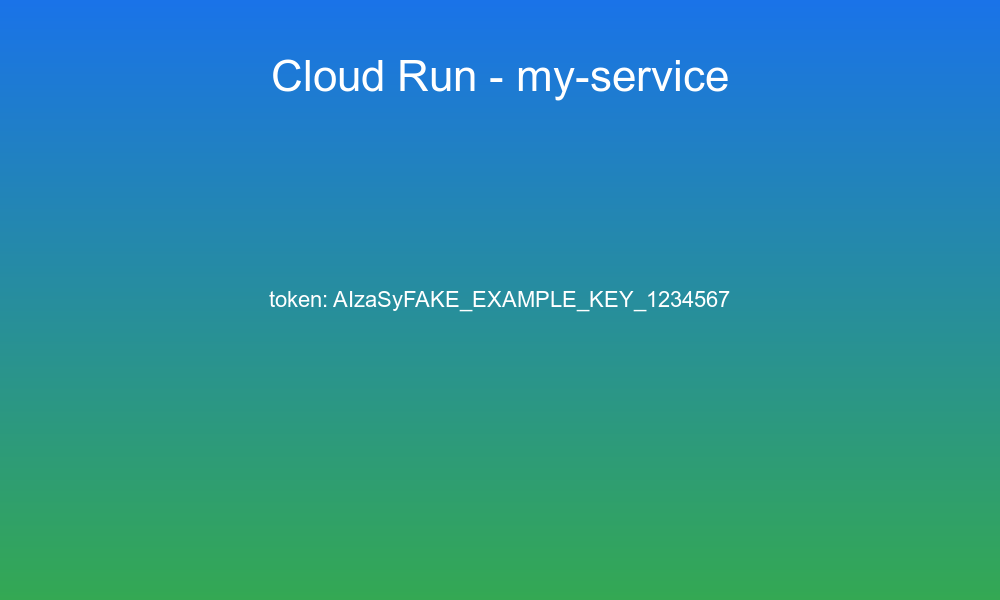
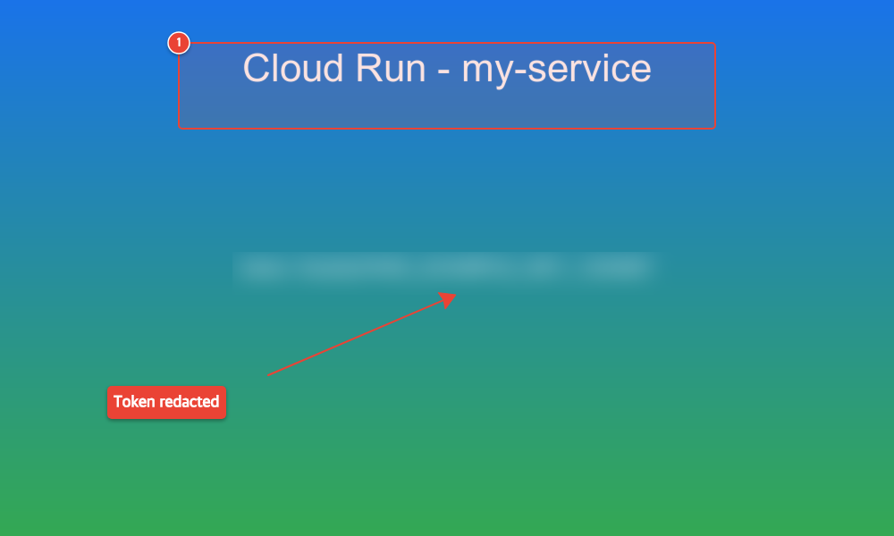
ORIGINAL: raw.png TRANSFORMED:anot8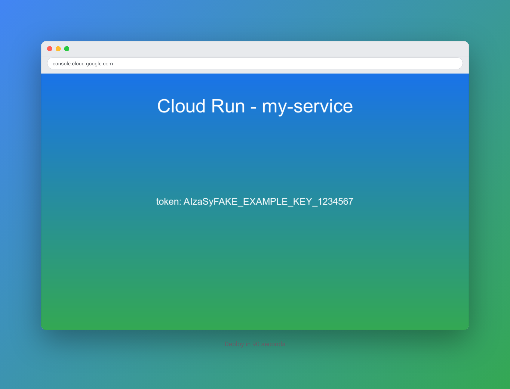
Rendered via headless Chromium at device_scale_factor=2 with traffic-light window controls, URL bar (console.cloud.google.com), elevation shadow, and caption.
{
"version": 1,
"image": { "source": "raw.png", "width": 1000, "height": 600 },
"palette": { "brand": "#1A73E8", "warn": "#EA4335", "ok": "#34A853", "note": "#FBBC04" },
"defaults": { "color": "warn" },
"annotations": [
{ "type": "blur", "id": "token", "x": "26%", "y": "47%", "width": "50%", "height": "8%",
"badge": false },
{ "type": "box", "id": "deploy", "x": "20%", "y": "8%", "width": "60%", "height": "16%",
"note": "Deploy runs here" },
{ "type": "arrow", "from": ["30%", "70%"], "to": "@token.bottom", "badge": false },
{ "type": "text", "at": ["12%", "72%"], "text": "Token redacted", "badge": false }
]
}
# 1. Apply declarative callouts & secret redaction anot8 render fixtures/steps.anot8.json -o out/demo/annotated.png # 2. Wrap in browser window chrome on hero backdrop .venv/bin/python skills/shot/scripts/frame.py \ -i fixtures/raw.png -o out/demo/shot.png \ --chrome browser --url "console.cloud.google.com" \ --backdrop hero --caption "Deploy in 90 seconds"
/raster Single-Pass ImageMagick Pipeline & Responsive WebP Ladder
Executes a 4-stage pipeline (resize:960,round:16,shadow,strip) in one ImageMagick process
and builds a multi-width WebP + oxipng PNG responsive srcset ladder via libvips.
srcset
Source image prior to corner masking and brand shadow elevation.
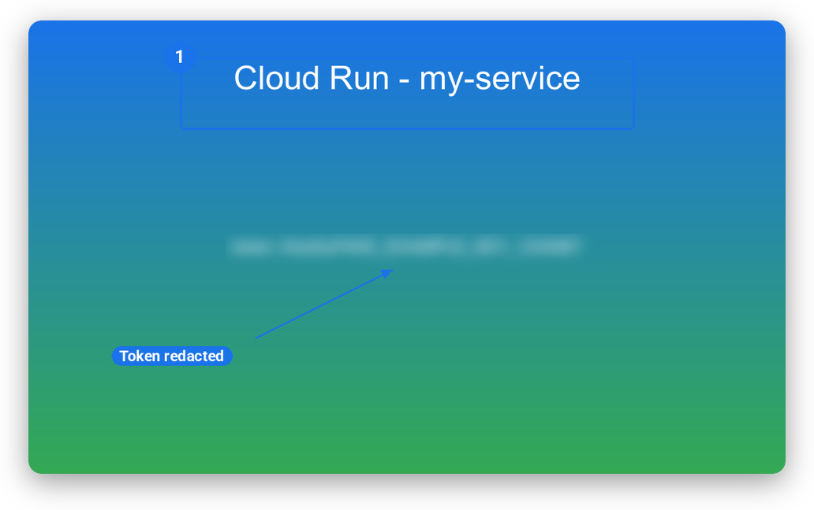
Shown on light paper background so the 16px alpha corner mask and 40x18+0+10 drop shadow are clearly visible.
{
"demo-annotated.png": {
"source": {
"width": 1000,
"height": 600
},
"outputs": [
{"file": "demo-annotated-480.webp", "width": 480, "format": "webp", "bytes": 3928},
{"file": "demo-annotated-480.png", "width": 480, "format": "png", "bytes": 15330},
{"file": "demo-annotated-960.webp", "width": 960, "format": "webp", "bytes": 10108},
{"file": "demo-annotated-960.png", "width": 960, "format": "png", "bytes": 37388}
],
"srcset": "demo-annotated-480.webp 480w, demo-annotated-960.webp 960w"
}
}
# 1. Single-invocation ImageMagick corner mask + elevation shadow .venv/bin/python skills/raster/scripts/edit.py \ -i out/demo/annotated.png -o out/demo/card.png \ --ops "resize:960,round:16,shadow,strip" # 2. Multi-width WebP + oxipng PNG responsive ladder .venv/bin/python skills/raster/scripts/ladder.py \ -i out/demo/annotated.png -o out/demo/ladder/ \ --widths 480,960 --formats webp,png
/render3d FreeCAD Parametric B-Rep Solid → Blender 5.0 Cycles & Turntables
Builds a parametric flanged planetary mount in headless FreeCAD 1.1.3 (freecadcmd),
projects an engineering wireframe blueprint via FreeCAD TechDraw, and raytraces the exported mesh in
headless Blender 5.0.1 Cycles (Apple Metal GPU) as studio stills, orthographic isometrics, and 360° turntables.
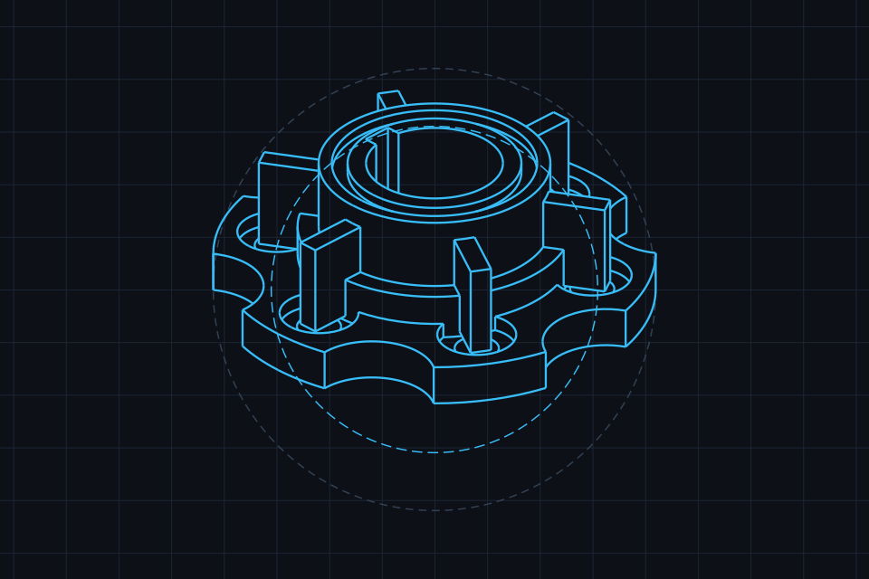
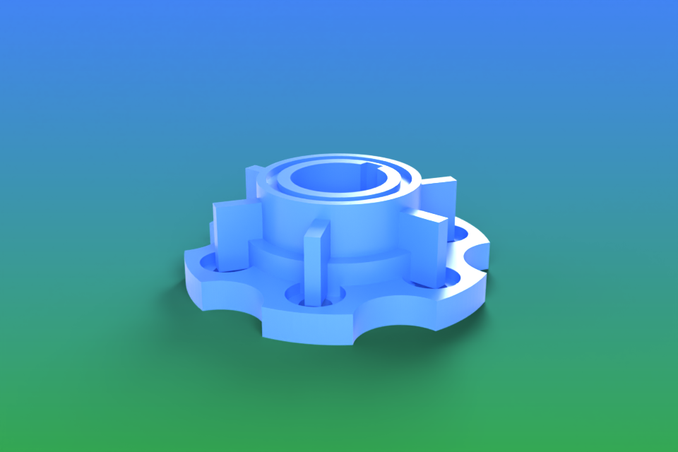
FREECAD TECHDRAW: cad-blueprint.svg BLENDER CYCLES: cad-studio.png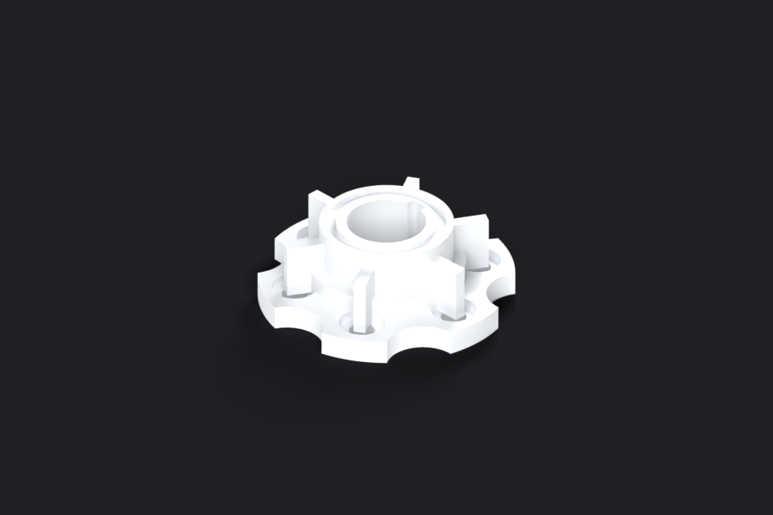
Rendered with an orthographic camera locked to the true isometric angle (arctan(1/√2) = 35.264°) for distortion-free engineering documentation.
render.py -i planetary-mount.stl --turntable --frames 36 --gpu
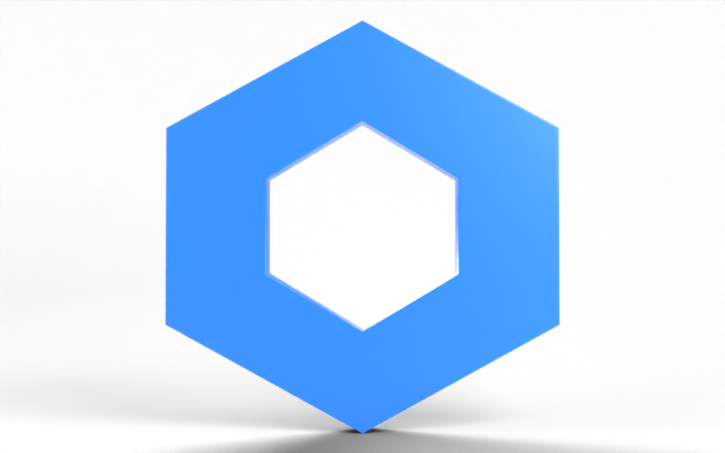
logo3d.py -i mark.svg --depth 0.08 --bevel 0.004 --gpu
logo3d.py -i mark.svg --spin --frames 36 --gpu (60° ease-in/out rock)
import math, FreeCAD, Part, Mesh
doc = FreeCAD.newDocument("PlanetaryMount")
base = Part.makeCylinder(42.0, 8.0)
for i in range(6):
angle = math.radians(i * 60.0)
bx, by = 31.0 * math.cos(angle), 31.0 * math.sin(angle)
base = base.cut(Part.makeCylinder(4.2, 20.0, FreeCAD.Vector(bx, by, -5.0)))
base = base.cut(Part.makeCylinder(7.5, 4.0, FreeCAD.Vector(bx, by, 5.0)))
collar = Part.makeCylinder(26.0, 14.0)
turret = Part.makeCylinder(22.0, 28.0)
body = base.fuse(collar).fuse(turret)
# + 6 radial stiffening gussets, 13mm central bore & keyway slot
Part.export([part_obj], "planetary-mount.step")
Mesh.export([part_obj], "planetary-mount.stl")
# 1. Generate STEP + STL + TechDraw SVG headlessly via FreeCAD /Applications/FreeCAD.app/Contents/Resources/bin/freecadcmd \ docs/report/assets/generate_cad.py # 2. Raytrace studio shot, isometric view & 360° turntable in Blender .venv/bin/python skills/render3d/scripts/render.py \ -i docs/report/assets/planetary-mount.stl \ -o docs/report/assets/cad-studio.png \ --view three-quarter --material blue --backdrop hero --gpu
/sound Broadcast Audio Cleanup, Procedural FluidSynth Beds & DAW Sessions
Extracts raw voice audio, applies an 80Hz high-pass rumble filter, de-esser, gate, compressor, and two-pass
EBU R128 loudness normalisation, synthesises royalty-free MIDI beds via FluidSynth, sidechain-ducks the music
12 dB under speech, and exports multi-track sessions for Audacity 4 (.lof) and Reaper 7 (.rpp).
rec.mp4 with dead air & unlevelled dynamics
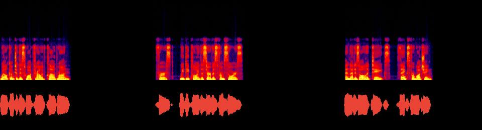
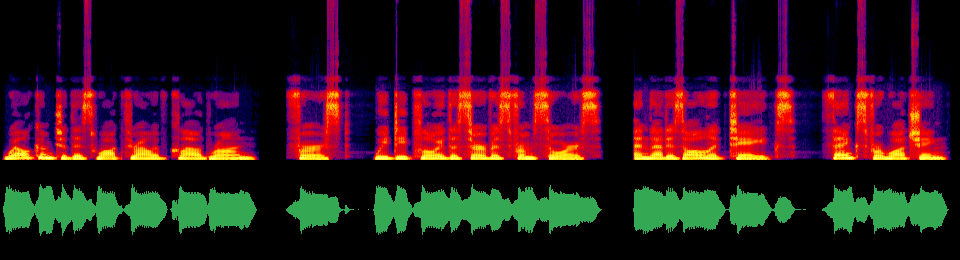
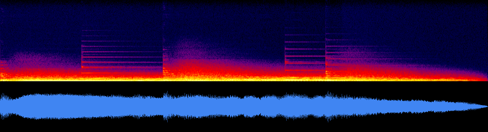
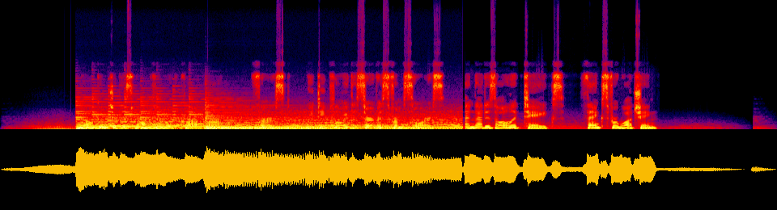
# Audacity 4 Multi-Track List-of-Files (assets/audacity-session.lof)
window
file "sting.wav" offset 0.0
file "voice-clean.wav" offset 1.0
file "bed.wav" offset 0.0
# Reaper 7 Project (assets/episode-session.rpp via session.py)
<REAPER_PROJECT 0.1 "7.0" 0
SAMPLERATE 48000 0 0
TEMPO 120 4 4
<TRACK
NAME "voice-clean"
<ITEM POSITION 0.000000 LENGTH 7.840000 ...>
>
<TRACK
NAME "bed"
VOLPAN 0.251189 0 -1 -1 1 # -12.0 dB pre-set stem gain
>
# 1. Synthesise royalty-free corporate sting & ambient bed .venv/bin/python skills/sound/scripts/bed.py -o sting.wav --style corporate --sting .venv/bin/python skills/sound/scripts/bed.py -o bed.wav --style ambient --duration 10 # 2. Clean raw speech & normalise to EBU R128 (-14.0 LUFS) .venv/bin/python skills/sound/scripts/clean.py -i cut.mp4 -o voice-clean.wav # 3. Sidechain-duck bed 12dB under speech + place sting at 0.0s .venv/bin/python skills/sound/scripts/mix.py \ -v voice-clean.wav -m bed.wav -s sting.wav@0.0 \ -o episode-mix.wav --lead 1.0 --tail 1.5 # 4. Generate Reaper .RPP multi-track project .venv/bin/python skills/sound/scripts/session.py \ -o episode-session.rpp -t voice-clean.wav -t "bed.wav@0.0:-12" -t "sting.wav@0.0:-3"
/vidkit Automated Silence Jump-Cuts, Karaoke Captions & DaVinci Resolve XML
Scans a `14.28s` screen recording for dead air, writes an editable `cut.json` decision list that trims 45% of the runtime (`7.84s` kept across 3 segments), burns word-by-word ASS `\kf` karaoke captions, and exports a frame-accurate FCP7 XML timeline (`edit.xml`) for DaVinci Resolve.
Raw capture with dead air pauses at 02.12s–04.88s and 07.62s–11.88s.
3 active segments concatenated seamlessly with 120ms breath margins.
Burned-in libass subtitles with brand accent word-by-word \kf sweep.
{
"version": 1,
"source": "fixtures/rec.mp4",
"duration": 14.279292,
"fps": 30.0,
"width": 1280,
"height": 720,
"segments": [
{"start": 0.0, "end": 2.1983},
{"start": 4.4777, "end": 7.2785},
{"start": 10.0377, "end": 12.8785}
],
"tool": "autocut",
"threshold_db": -35.0,
"padding": 0.15,
"kept": 7.84,
"removed": 6.439
}
{
"version": 1,
"template": "title",
"duration": 2.0,
"fps": 30,
"width": 1920,
"height": 1080,
"mode": "dark",
"alpha": false,
"params": {
"kicker": "Creative Stack",
"title": "Ship faster with 8 skills",
"subtitle": "Automated media production on macOS & Linux"
}
}
/vector Brand-Themed D2 Diagrams, SVGO Optimisation & Potrace Bitmap Tracing
Compiles declarative text diagrams (.d2, .mmd, .dot, .puml)
using the palette and typography in brand/tokens.json, optimises SVG trees via SVGO without stripping
viewBox, and traces blurred raster bitmaps into smooth cubic Bézier SVG paths via Potrace.
#1A73E8 accent stroke, surface fills, and Google Sans

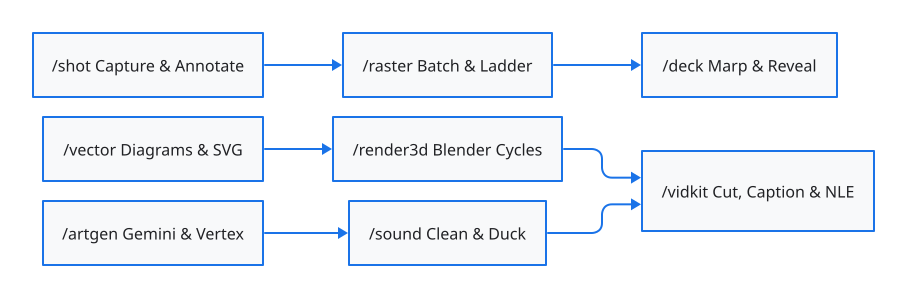
Compiled by diagram.py -i pipeline.d2 -o pipeline.svg and optimised by svg.py --op optimise.
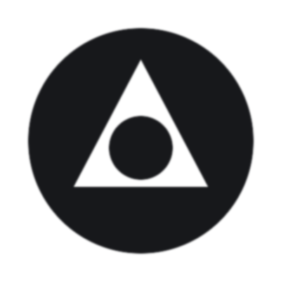
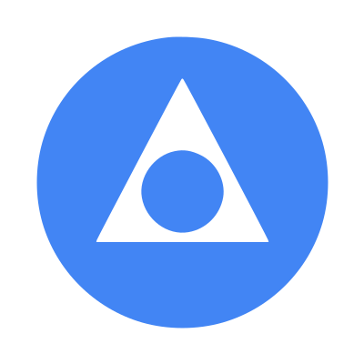
Thresholded via ImageMagick, traced into cubic Bézier curves by Potrace, and tinted to brand.blue (#4285F4).
/deck Structured Markdown Outline → Brand-Themed 7-Slide Deck
Expands a plain Markdown outline (`fixtures/outline.md`) into a 7-slide Marp deck (`deck.md`) with speaker notes and section dividers, then compiles it with brand CSS generated from `brand/tokens.json` into `deck.pdf`.
#, ##), bullets & Notes:
---), layout classes & footer directives
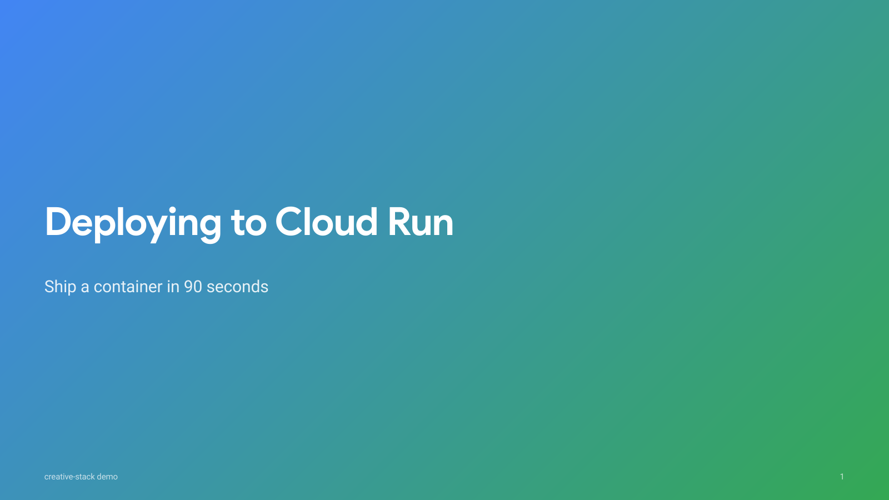
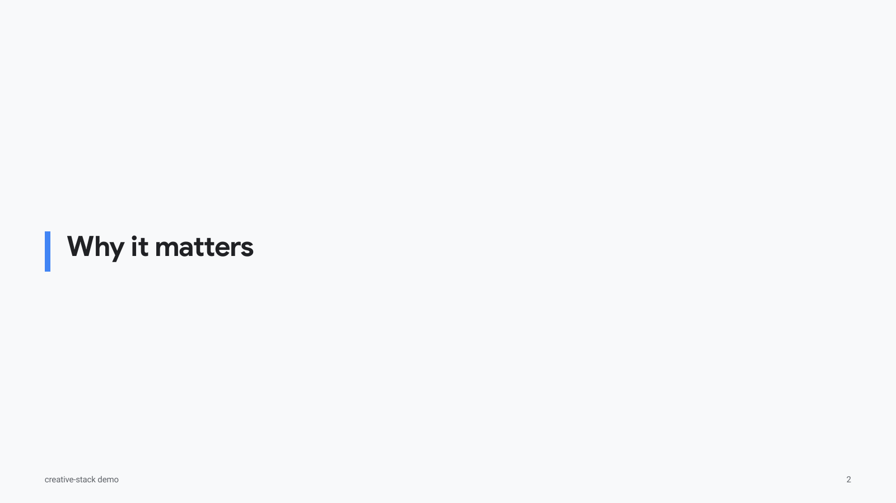
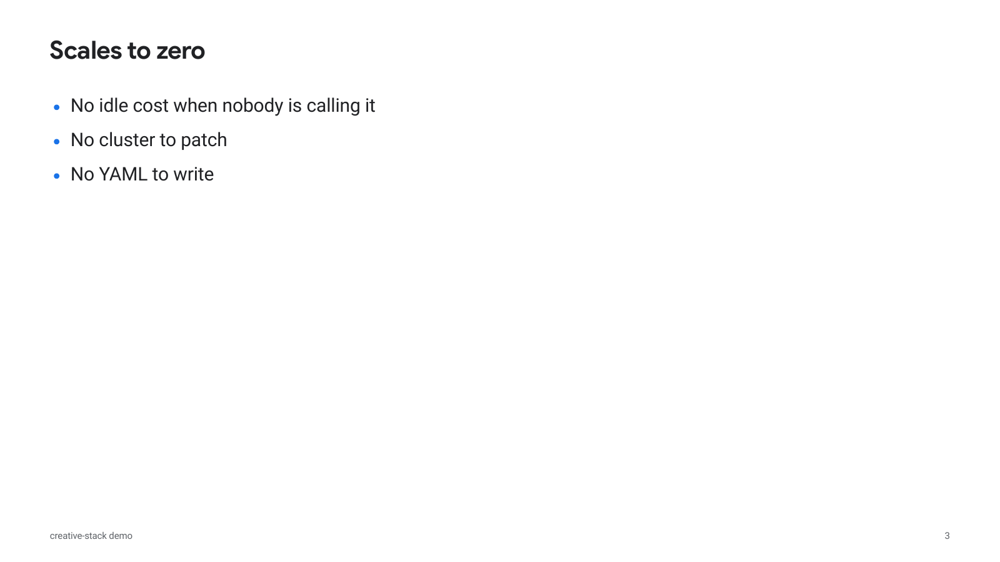
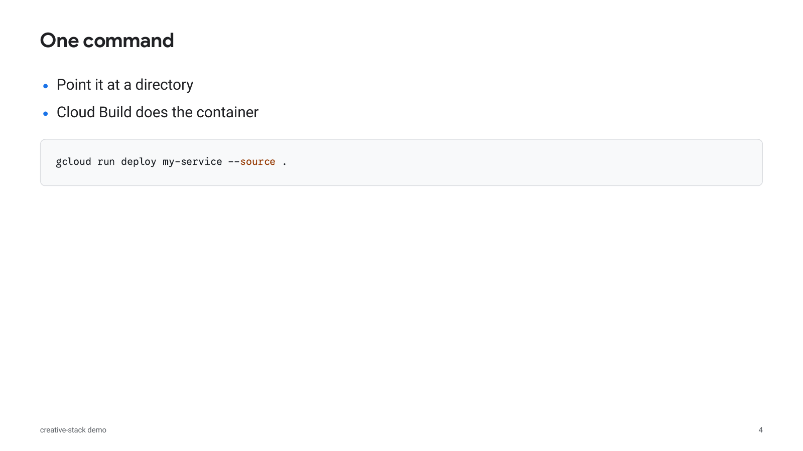
# Deploying to Cloud Run > Ship a container in 90 seconds ## Why it matters ## Scales to zero - No idle cost when nobody is calling it - No cluster to patch - No YAML to write ## One command - Point it at a directory - Cloud Build does the container
--- marp: true theme: creative-google paginate: true footer: 'creative-stack demo' --- <!-- _class: lead --> # Deploying to Cloud Run Ship a container in 90 seconds
/artgen Generative Media Endpoints & Global AI Assistant Wiring
Connects Vertex AI (ksp-sandbox) and Gemini Developer API (macOS Keychain) for image generation,
Veo / Gemini Omni video, Lyria music, and Gemini / Chirp 3 HD speech, and wires all 8 skills + 3 MCP servers
across every AI coding assistant on this Mac.
| AI Assistant / Harness | Skills Symlink Path | Project MCP Config | Verified State |
|---|---|---|---|
| Claude Code (claude) | ~/.claude/skills |
.mcp.json (project, pending approval) |
✓ 8 Skills + 3 Opt-in MCP Servers |
| OpenAI Codex (codex) | ~/.agents/skills |
User-scope only (~/.codex/config.toml not written; prints codex mcp add) |
✓ 8 Skills Linked |
| Gemini CLI (gemini) | ~/.gemini/skills |
.gemini/settings.json (project) |
✓ 8 Skills + 3 Opt-in MCP Servers |
| Antigravity IDE | ~/.gemini/config/skills (registered in ~/.gemini/config/skills.json) |
User-scope only (~/.gemini/config/mcp_config.json not written; prints hint) |
✓ 8 Skills Linked & Registered |
| Antigravity CLI (agy) | ~/.gemini/antigravity-cli/skills |
— | ✓ 8 Skills Linked |
| Universal Agent Hub | ~/.agents/skills (registered in ~/.agents/skills.json) |
— | ✓ 8 Skills Linked & Registered |
| Cursor | Reads ~/.claude/skills |
.cursor/mcp.json (project) |
✓ 8 Skills + 3 Opt-in MCP Servers |
{
"engine": "gemini",
"style": "",
"gap": 0.6,
"model": null,
"voice": "Charon",
"chunks": [
{
"text": "Welcome to Creative Stack. Every skill writes a reviewable intermediate file before rendering pixels or audio."
}
]
}
✓ vertex:gemini-3.1-flash-image (image @global) ✓ vertex:gemini-3.8-flash (vision verifier @global) ✓ vertex:gemini-omni-1.1-flash-preview (video @global) ✓ vertex:veo-3.1-generate-001 (video @us-central1) ✓ vertex:lyria-002 (music @us-central1) ✓ vertex:gemini-3.1-flash-tts-preview (speech @us-central1) ✓ aistudio:gemini-3.1-flash-image (image) ✓ aistudio:gemini-3.8-flash (vision) ✓ aistudio:gemini-3.1-flash-tts-preview (speech) ✓ texttospeech:chirp3-hd (speech — 30 en-US voices)